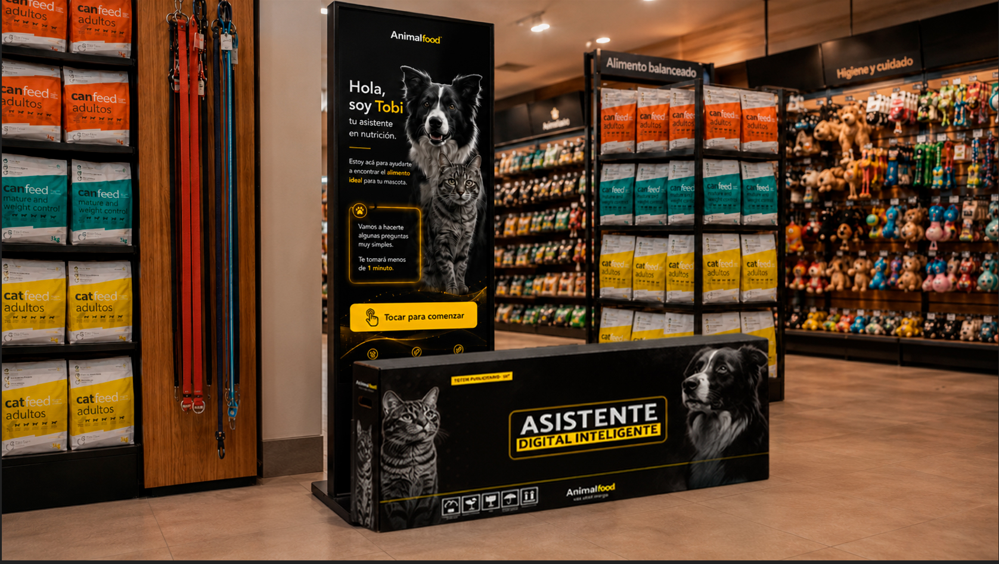
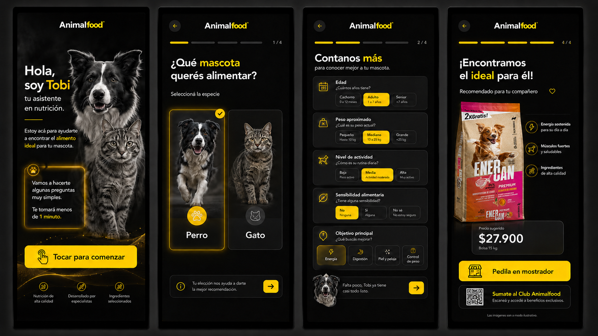
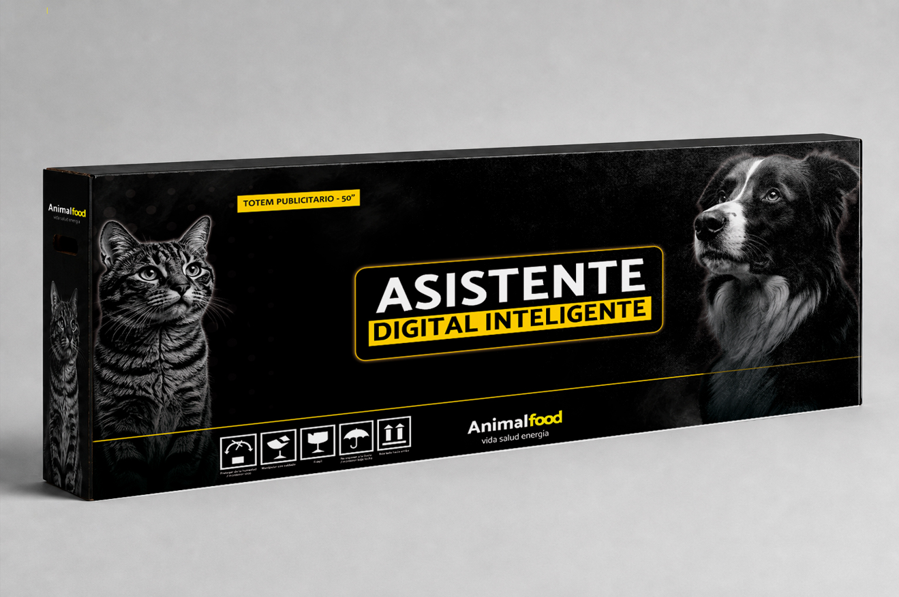
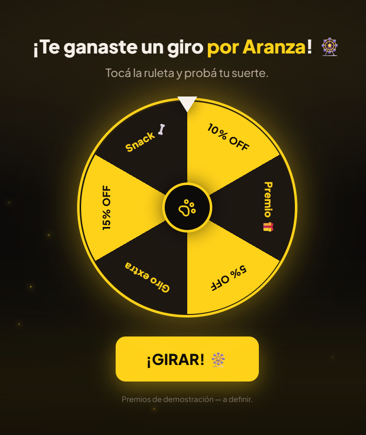

Lo que venimos haciendo está dando resultados. Te presento el Asistente AnimalFood —diseño y prototipo navegable— y, sobre todo, el sistema completo que hay detrás: software, captación de consumidores, operación de la flota y marketing. No es un gasto más: es una unidad de crecimiento para la marca.
ParaRoberto — AnimalFood
DeGonzalo — Lvanto
Fecha17 / 06 / 2026
[ Foto: el tótem en una veterinaria real ]

Tu Asistente, en cada local.Imaginátelo recibiendo a cada cliente, 24/7.
1. El Asistente Digital Inteligente
Tu idea del asistente virtual, hecha producto.
Diseño de la cajaEl packaging del tótem en la identidad AnimalFood —negro + amarillo, premium— con el nombre "Asistente Digital Inteligente" que surgió de tu pedido.
Prototipo de la experienciaUn demo navegable y real (no una maqueta estática): "Tobi" conversa con el cliente, pregunta por su mascota y recomienda la línea ideal. Lo vas a poder tocar.
Recomendación seguraAsesora sin hacer promesas médicas y deriva al veterinario cuando corresponde. Cuida la marca.
Pensado para 100 tótemsSe actualiza a distancia: cambiás contenido o promos en todos los locales sin tocar pantalla por pantalla.
[ Imagen: las pantallas del sistema ]

Así se ve la experiencia, pantalla por pantalla.De la bienvenida a la recomendación ideal, en menos de un minuto.
[ Foto: render de la caja del tótem ]

Cada tótem se entrega con su manual de preservación y uso + un video tutorial en YouTube, para que el dueño del local lo ponga en marcha y lo cuide sin depender de nadie.
🔒 Control total de marca: el sistema lo operamos íntegramente nosotros, con todas las trabas necesarias para que en los tótems solo se muestre contenido del universo AnimalFood. Cada local puede subir un video de su propia veterinaria/petshop, pero se publica únicamente tras nuestra aprobación manual — nada sale al aire sin pasar por Lvanto.
📌 Estado: diseño y prototipo listos para tu validación. Con tu OK pasamos a producción y lo dejamos funcionando.
2. Hacia dónde va el proyecto
El tótem es la punta. El valor real es lo que viene detrás.
🖥️
Tótem
Asesora y engancha en el local
→
📱
Comunidad
Se registra y carga su mascota
→
🗄️
Base de datos
Base propia, con consentimiento
→
🔁
Recompra
Ruleta + descuento mensual + emails
Se vuelve un sistema de captación y recompra — medible paso a paso.
El objetivo real
Que cada persona se sume al Programa AnimalFood y reciba un descuento todos los meses.
El tótem no asesora por asesorar: cada recomendación termina invitando a suscribirse. Cada suscripción es un consumidor final en una base de datos propia — alguien a quien le podés hablar directo, todos los meses, sin intermediarios.
¿Por qué es lo más importante? Porque el consumidor final es el que genera la demanda real. Una marca que la gente pide en el mostrador se vende sola; una que nadie conoce, hay que empujarla local por local. Construir demanda es construir el activo más valioso de AnimalFood.
Y no se queda en el tótem: el mismo mecanismo —suscripción + beneficio mensual— se replica en redes para hacer retargeting y generar permanencia con tu audiencia. El tótem capta en el local; las redes mantienen y reactivan. Un solo motor de demanda.
[ Pantalla: la ruleta del Club ]

Girá y ganá 🎡El premio se reclama sumándote al Club. Cada giro, un suscriptor nuevo.
3. Qué estás contratando
Antes de los números, leámoslo con el marco correcto.
Esto no es un fee de redes.
Es una unidad de crecimiento: software a medida, IA, captación de consumidores finales, operación de una flota de 100 tótems, contenido, retargeting y soporte comercial para tus puntos de venta. Comparado con publicar posteos, parece caro. Comparado con lo que realmente entrega, es otra categoría.
Para el consumidor · B2C
Una puerta de entrada al cliente final
Asesora y recomienda en el momento de decidir
Lo registra en el Programa AnimalFood
Le da un descuento mensual → recompra
Instala demanda: que pidan la marca en el mostrador
Para tu negocio · B2B
Seriedad y control en el punto de venta
Herramienta de recomendación en cada local
Presencia de marca premium frente al petshop
Control remoto del contenido en los 100 locales
Soporte y operación que respaldan al comercio
4. El plan, por fases
Cada fase se aprueba y se paga contra entregables — no todo de una. Esto es lo que incluye cada una.
Fase 1 · Listo el diseño y el prototipo
Producción del Asistente
App instalable en modo kiosko (Android)
Funcionamiento sin internet (modo offline)
Lógica de recomendación (especie, edad, porte, actividad)
Panel de administración (promos/contenido por local)
Contenido restringido al universo AnimalFood
Carga de video del local, con aprobación manual
Actualización remota de contenido a la flota
Derivación al veterinario (disclaimer de seguridad)
Analítica de uso (interacciones por tótem)
QA probado en un tótem real
Manual de uso + video tutorial en YouTube
Fase 2 · la de mayor desarrollo
Comunidad + Base de datos
Es una plataforma propia (no vive en el tótem): registra y protege los datos de miles de personas, con su panel y su sistema de cupones. La parte más valiosa — tu base de clientes.
Registro con cuenta de Google
Alta de la mascota (datos + foto)
Base de datos administrable (dashboard)
Ruleta de premios
Generación de cupón único
Validación de uso (el cupón se "quema")
Exportación de datos
Consentimiento + política de privacidad
Fase 3
Retención + contenido propio
Plataforma de email integrada
Automatización del envío mensual
Cupón único que caduca al usarse
Blog en la web (SEO + GEO)
Calendario editorial
Reporte mensual de resultados
5. La propuesta
Dos cosas separadas: la inversión única del producto y el trabajo mensual.
1 · Proyecto (inversión única, por fases)
🖥️ El Asistente AnimalFood
Fase 1 — Producción del AsistenteApp + panel + recomendación + offline + analítica + manual + tutorialUSD 7.500
Fase 2 — Comunidad + base de datosLa de mayor desarrollo: plataforma propia + base de datos + cuponesUSD 13.000
Fase 3 — Retención (emails) + blog GEO/SEOAutomatización + cupón único + posicionamientoUSD 4.500
SubtotalUSD 25.000
Bonificación cliente AnimalFood (–15%)Por la continuidad de +1 año juntos y el fee activo– USD 3.750
Inversión total del proyectoSe paga por fase, contra entregables — no todo de unaUSD 21.250
⏱️ Plazo de entrega: 40 días desde la aprobación para dejar la Fase 1 operativa e instalable.
2 · Fee mensual · todo incluido
📈 Marketing, crecimiento y operación
Un único fee que cubre todo el trabajo mensual — marca, contenido y demanda + la operación completa de los 100 tótems:
Fee mensual — todo incluidoMarketing + operación de los 100 tótems, en un solo número$ 5.000.000 /mes
⚙️ Por qué el proyecto en dólares y el fee en pesos: el desarrollo es una inversión puntual con exposición técnica dolarizada; el fee es mensual y va en pesos para que sea administrable. El paso a $5M no es automático: arranca únicamente con la flota operativa + el Club activo + soporte técnico real.
6. Qué incluye y qué no
Claridad para que el fee no se transforme en una bolsa infinita de pedidos.
Viajes, instalación física y soporte fuera de horario
Honorarios legales / inscripción de bases
Mantenimiento del hardware (es del comodato)
Los ítems "no incluidos" se cotizan aparte o los provee AnimalFood. Los extras puntuales (viajes para instalar/configurar, eventos con dron, herramientas de IA para otras áreas) se presupuestan por proyecto.
7. Cómo lo medimos
No se mide por "me gusta". Se mide como una inversión.
Demanda · B2C
Interacciones por tótem
Tasa de registro al Club
Costo por consumidor registrado
Tasa de uso del cupón y recompra
Crecimiento de la base propia
Apertura / clic de los emails
Operación · B2B
Tótems activos y uptime de la flota
Locales usando el sistema
Incidencias resueltas < 24 hs hábiles
Pedidos de actualización de promos
Feedback de petshops / veterinarias
Consultas comerciales por zona
Cuando AnimalFood comparta datos de venta (ticket, frecuencia, redención), cruzamos estas métricas con el sell-through por local para mostrar el retorno real, no estimado.
8. Datos y cumplimiento
Capturar consumidores es un activo — y se hace bien desde el día uno.
El sistema se diseña para cumplir la normativa argentina de datos personales (Ley 25.326 / AAIP): consentimiento explícito de cada persona sobre el uso comercial de sus datos, baja de emails en un clic, y bases y condiciones de las promociones y descuentos. La validación legal final y la inscripción de bases cuando corresponda quedan a cargo de AnimalFood; Lvanto entrega el sistema preparado para cumplir. Esto no frena el proyecto: lo hace más serio y protege a la marca.
9. Por qué seguir creciendo con Lvanto
Velocidad: del pedido al prototipo del Asistente en semanas, con foco y sin vueltas.
Conocimiento interno de tus marcas: tu catálogo, tu cliente y tu estética ya los manejo. No arrancás de cero.
Continuidad operativa: un solo responsable que piensa marketing, producto y operación como un sistema.
Actualización constante en IA: traigo lo último a tu negocio, aplicado a resultados concretos.
Lo que construimos funciona. Llevémoslo al lugar que merece.
Quedo a disposición para mostrarte el prototipo en vivo, repasar el alcance y arrancar la Fase 1 cuando digas.